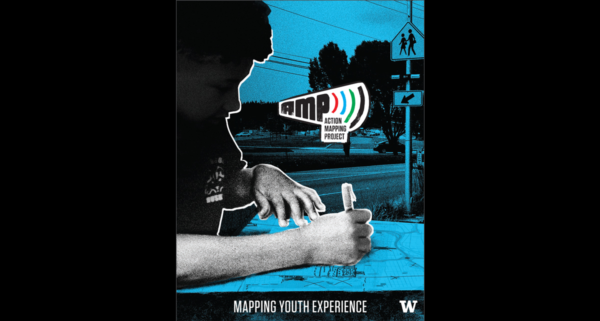

The Action Mapping Project
Currently Leslie Kirk serves as a Research Assistant and Project Manager for the Action Mapping Project (AMP). AMP empowers youth to transform their everyday experience and neighborhood knowledge into information that can be used to advocate for change. AMP aims to motivate community improvements that reflect the interests, culture, and priorities of local youth.
Leslie Kirk and Community Mapping Mentor Augustine Canales spoke at the 2018 UW Tacoma Summer Soiree raising money for the Whole Child Initiative and AMP.Visit the AMP website
